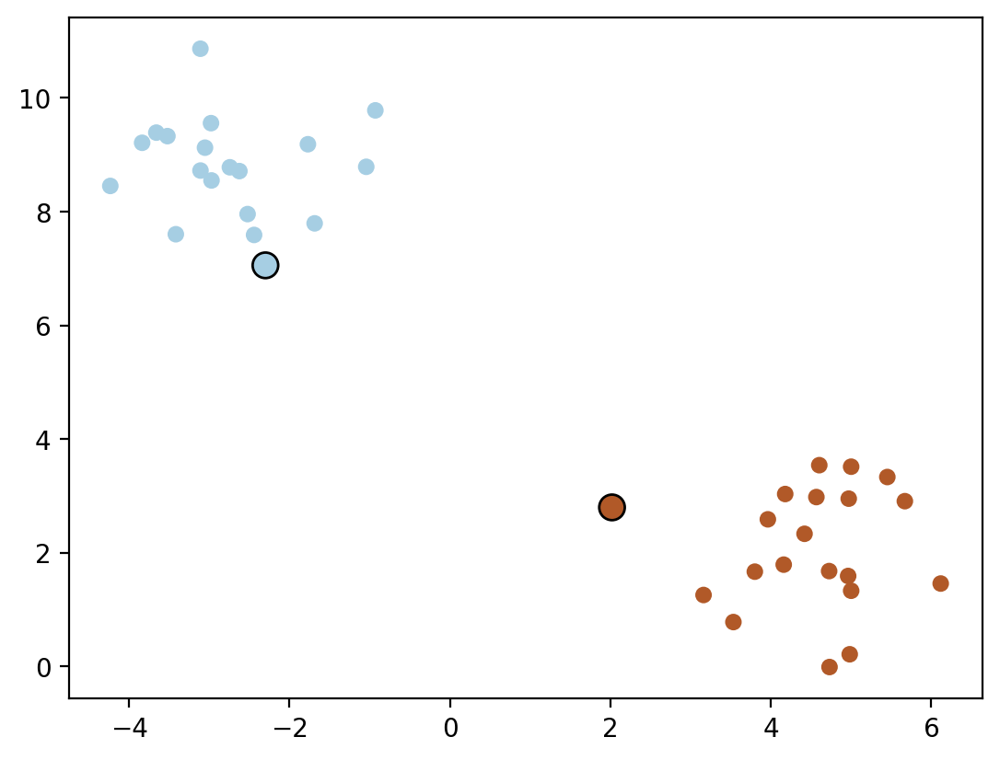

try:
import cvxopt
import cvxopt.solvers
except:
%pip install cvxopt
import cvxopt
import cvxopt.solvers
import numpy as np
from sklearn.datasets import make_blobs
import matplotlib.pyplot as plt
%matplotlib inline
%config InlineBackend.figure_format = 'retina'SVM implementation using CVXOpt
SVM using CVXOpt
This post is pretty much borrowed with slight modifications from this excellent blog post from Matthieu Blondel
General QP problem
A general QP problem can be formulated as follows:
\[ \begin{align*} \text{minimize} \quad & \frac{1}{2} x^T P x + q^T x \\ \text{subject to} \quad & G x \leq h \\ & A x = b \end{align*} \]
Solving in Dual
In dual in hard margin SVM, the dual problem is formulated as follows:
\[ \begin{align*} \text{maximize} \quad & \sum_{i=1}^{m} \alpha_i - \frac{1}{2} \sum_{i=1}^{m} \sum_{j=1}^{m} \alpha_i \alpha_j y^{(i)} y^{(j)} (x^{(i)})^T x^{(j)} \\ \text{subject to} \quad & \alpha_i \geq 0 \quad \text{for} \quad i = 1, 2, \ldots, m \\ & \sum_{i=1}^{m} \alpha_i y^{(i)} = 0 \end{align*} \]
Or, we can write it in the following form (minimization problem): \[ \begin{align*} \text{minimize} \quad & \frac{1}{2} \alpha^T Q \alpha + e^T \alpha \\ \text{subject to} \quad & y^T \alpha = 0 \\ & \alpha \geq 0 \end{align*} \]
where \[ \begin{align*} Q_{ij} & = y^{(i)} y^{(j)} (x^{(i)})^T x^{(j)} \\ e_i & = -1 \end{align*} \]
we can again write it in the following form using kernel trick:
\[ Q_{ij} = y^{(i)} y^{(j)} K(x^{(i)}, x^{(j)}) \]
where \(K(x^{(i)}, x^{(j)}) = (x^{(i)})^T x^{(j)}\) is the kernel function.
Thus, we can now set \[ \begin{align*} P & = Q \\ q & = e \\ G & = -I \\ h & = 0 \\ A & = y^T \\ b & = 0 \end{align*} \]
where \(I\) is the identity matrix.
def linear_kernel(x1, x2):
return np.dot(x1, x2)
def polynomial_kernel(x, y, p=3):
return (1 + np.dot(x, y)) ** p
def gaussian_kernel(x, y, sigma=5.0):
return np.exp(-np.linalg.norm(x-y)**2 / (2 * (sigma ** 2)))X, y = make_blobs(n_samples=40, centers=2, n_features=2, random_state=42)
y[y == 0] = -1.0
plt.scatter(X[:, 0], X[:, 1], c=y, s=30, cmap=plt.cm.Paired)
n_samples, n_features = X.shape
kernel = linear_kernel
# Gram matrix
K = np.zeros((n_samples, n_samples))
for i in range(n_samples):
for j in range(n_samples):
K[i,j] = kernel(X[i], X[j])# QP problem formulation
P = cvxopt.matrix(np.outer(y, y) * K)
q = cvxopt.matrix(-np.ones(n_samples))
A = cvxopt.matrix(y, (1, n_samples), 'd')
b = cvxopt.matrix(0.0)
G = cvxopt.matrix(-np.eye(n_samples))
h = cvxopt.matrix(np.zeros(n_samples))dictionary = {"P": P, "q": q, "A": A, "b": b, "G": G, "h": h}
for key, val in dictionary.items():
print(key, val.size)P (40, 40)
q (40, 1)
A (1, 40)
b (1, 1)
G (40, 40)
h (40, 1)solution = cvxopt.solvers.qp(P, q, G, h, A, b) pcost dcost gap pres dres
0: -1.4386e+00 -2.2358e+00 8e+01 8e+00 2e+00
1: -5.3423e-01 -2.0710e-01 6e+00 7e-01 1e-01
2: 3.5560e-03 -1.3362e-01 1e-01 4e-16 6e-15
3: -3.7579e-02 -5.5490e-02 2e-02 4e-17 7e-16
4: -5.0978e-02 -5.6104e-02 5e-03 9e-19 6e-16
5: -5.4114e-02 -5.4359e-02 2e-04 1e-17 6e-16
6: -5.4321e-02 -5.4336e-02 1e-05 7e-18 8e-16
7: -5.4333e-02 -5.4333e-02 1e-07 1e-17 7e-16
8: -5.4333e-02 -5.4333e-02 1e-09 2e-17 6e-16
Optimal solution found.alphas_sol = np.array(solution['x']).flatten()
alphas_solarray([4.81116795e-11, 5.57561687e-11, 4.14022254e-11, 5.64570278e-11,
3.19971594e-11, 1.13766765e-09, 1.10946709e-10, 5.43328120e-02,
9.43563733e-11, 3.59644883e-11, 2.72365634e-11, 1.78702226e-08,
7.91651647e-11, 4.45973348e-11, 6.48044988e-11, 3.09926966e-11,
3.26557350e-11, 4.12118866e-11, 2.53367783e-10, 4.55829611e-11,
4.43685787e-11, 6.12190291e-11, 5.72210101e-11, 3.48077854e-11,
2.70414582e-11, 3.72073366e-11, 4.52326326e-11, 6.21623048e-11,
3.61239404e-11, 3.61946755e-11, 2.70499880e-11, 6.76419169e-11,
3.77922165e-11, 9.70279801e-11, 4.63391531e-11, 6.74255180e-11,
3.77950852e-11, 5.47202347e-11, 5.02000180e-11, 5.43328313e-02])alphas_sol[alphas_sol > 1e-5]array([0.05433281, 0.05433283])# Support vectors have non zero lagrange multipliers
sv = alphas_sol > 1e-5
ind = np.arange(len(alphas_sol))[sv]
a = alphas_sol[sv]
sv_x = X[sv]
sv_y = y[sv]
# Plot the support vectors
plt.scatter(X[:, 0], X[:, 1], c=y, s=30, cmap=plt.cm.Paired)
# Mark the support vectors with thick black circles
plt.scatter(sv_x[:, 0], sv_x[:, 1], c=sv_y, s=100, cmap=plt.cm.Paired, marker='o', edgecolors='k')
w = np.sum(a * sv_y[:, None] * sv_x, axis=0)
warray([ 0.23474316, -0.23143308])b = np.sum(sv_y - np.dot(sv_x, w)) / len(sv_y)
b1.1726593683601716# Plot the decision boundary and margins
plt.scatter(X[:, 0], X[:, 1], c=y, s=30, cmap=plt.cm.Paired)
plt.scatter(sv_x[:, 0], sv_x[:, 1], c=sv_y, s=100, cmap=plt.cm.Paired, marker='o', edgecolors='k')
x_min = np.min(X[:, 0])
x_max = np.max(X[:, 0])
y_min = (-w[0] * x_min - b) / w[1]
y_max = (-w[0] * x_max - b) / w[1]
plt.plot([x_min, x_max], [y_min, y_max], 'k-')
# Margin 1
y_min = (-w[0] * x_min - b + 1) / w[1]
y_max = (-w[0] * x_max - b + 1) / w[1]
plt.plot([x_min, x_max], [y_min, y_max], 'k--')
# Margin 2
y_min = (-w[0] * x_min - b - 1) / w[1]
y_max = (-w[0] * x_max - b - 1) / w[1]
plt.plot([x_min, x_max], [y_min, y_max], 'k--')

Using cvxpy
import cvxpy as cp
alpha = cp.Variable(n_samples)
inequality_constraints = [alpha >= 0]
equality_constraints = [cp.multiply(alpha, y) == 0]
overall_constraints = inequality_constraints + equality_constraints
P_numpy = np.outer(y, y)* K + 3e-8 * np.eye(n_samples)
objective = cp.Maximize(cp.sum(alpha) - 0.5 * cp.quad_form(alpha, P_numpy))
prob = cp.Problem(objective, overall_constraints)
result = prob.solve()prob.status
alpha.value.sort()
alpha.valuearray([-1.49664286e-08, -7.86036073e-09, -7.48959975e-09, -4.95631234e-09,
-4.80337014e-09, -4.21382858e-09, -4.17627547e-09, -3.60319297e-09,
-2.54786233e-09, -1.86476801e-09, -1.28264318e-09, -6.50572915e-10,
-3.44845584e-10, -4.45332158e-11, 2.50213529e-10, 2.67913419e-10,
8.79522453e-10, 8.82710270e-10, 9.50098303e-10, 1.82268844e-09,
2.74355414e-09, 3.45032195e-09, 4.95527787e-09, 5.02308218e-09,
5.34165002e-09, 6.71939414e-09, 6.94177696e-09, 7.06890144e-09,
9.38395895e-09, 9.49925189e-09, 9.72666606e-09, 1.15208492e-08,
1.18351650e-08, 1.20920336e-08, 1.22215620e-08, 1.69516039e-08,
2.28584041e-08, 3.45155480e-08, 5.49049991e-08, 1.01339280e-07])Primal using cvxopt
# Number of features
n_features = X.shape[1]
# Identity matrix
P = cvxopt.matrix(np.block([[np.eye(n_features), np.zeros((n_features, 1))], [np.zeros((1, n_features + 1))]]))
# Inequality constraints matrix
G = cvxopt.matrix(-np.block([np.diag(y) @ X, y.reshape(-1, 1)]))
# Inequality constraints bounds
h = cvxopt.matrix(-np.ones(X.shape[0]))
# Solve the QP problem
solution = cvxopt.solvers.qp(P, cvxopt.matrix(np.zeros(n_features + 1)), G, h)
# Extract optimized w and b values
w_opt = np.array(solution['x'][:-1])
b_opt = np.array(solution['x'][-1]) pcost dcost gap pres dres
0: 1.9726e-02 3.3304e+00 8e+01 2e+00 3e+02
1: 1.2482e-01 -5.6113e+00 6e+00 1e-01 2e+01
2: 1.3362e-01 -3.5560e-03 1e-01 4e-16 5e-15
3: 5.5490e-02 3.7579e-02 2e-02 3e-16 3e-16
4: 5.6104e-02 5.0978e-02 5e-03 2e-16 1e-16
5: 5.4359e-02 5.4114e-02 2e-04 2e-16 1e-16
6: 5.4336e-02 5.4321e-02 1e-05 2e-16 2e-15
7: 5.4333e-02 5.4333e-02 1e-07 3e-16 2e-16
8: 5.4333e-02 5.4333e-02 1e-09 2e-16 3e-16
Optimal solution found.w_opt, w(array([[ 0.23474325],
[-0.23143308]]),
array([ 0.23474316, -0.23143308]))b_opt, b(array(1.17265942), 1.1726593683601716)